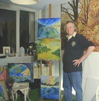

|
|  |
Je suis
né à Bruxelles le 15 mars 1943 en plein
conflit, fils de Jules Mondial Francaux, excellent pianiste
et passionné de vélo, ce qui me valut d'être
cycliste professionnel pendant 3 ans, pas longtemps, mais la
souffrance sur le vélo, je connais ! |
Elève
libre du peintre Paul Delvaux dans les années 6o :
son conseil
"éclate toi dans la couleur - c'est ce que tu sais le
mieux faire".
Quelques
expositions à Bruxelles, Anvers, Liège, Namur,
Paris où je peints quelque temps la place du Tertre.
Puis un grand vide de 15 longues années sans tenir un
pinceau en main - années pendant lesquelles je deviens
marchand et expert avec mon ami Willy Dekuister, après
ce long, long silence, la joie et le bonheur me reviennent
en 1994 - je viens à Lyon, où mon cœur est déjà,
pour vivre une grande passion avec la femme que j'aime.
Je déjeune tous les matins devant une place du Tertre
qui me rappelle des souvenirs …
Je peins à
nouveau la place du Tertre pour mon amour de petite femme et je
me remets à créer, à faire vivre les couleurs
comme Claude et Vincent qui m'influencent beaucoup,
c'est le bonheur, l'étincelle et l'amour. Les expositions
recommencent, le stress du strip-tease dans les vernissages me reprend
à chaque exposition mais c'est aussi la joie de revoir mes
amis, d'en rencontrer d'autres et d'être bien dans ma peau.
Je ne vous ai
pas tout dit : j'ai fait les arts graphiques et le dessin publicitaire
à Don Bosco, à Bruxelles.
C'est bon la
vie, j'essaie dans ma peinture de vous faire partager mon bonheur
de vivre, d'aimer et toute la sensibilité que j'ai à
fleur de peau.
|
|